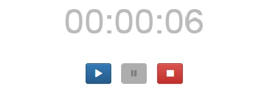

Self defined filter to show 2 digits time

Documentation
In this experiment, I implemented a timer which has start, pause and stop functions.
To display current passed time on screen, I need to first convert the total seconds to hours, minutes and seconds. Then use a filter to make sure the time is displayed as two digits number on screen.
Code Snippet
Following code do the conversion from total seconds to hours, minutes and seconds.
var formatTimer = function(seconds) {
return {
hours: parseInt(seconds/3600),
minutes: parseInt((seconds%3600)/60),
seconds: (seconds%3600)%60
}
}
Following code defines a filter, which pads an extra 0 if the current number has only one digit.
app.filter('fixedTowLen', function () {
return function (number) {
var num = parseInt(number, 10);
if (isNaN(num)) {
return num;
}
num = ''+num;
while (num.length < 2) {
num = '0'+num;
}
return num;
}
})
And following is how the filter is used in html code:
{{timerCtrl.counter.hours | fixedTowLen }}